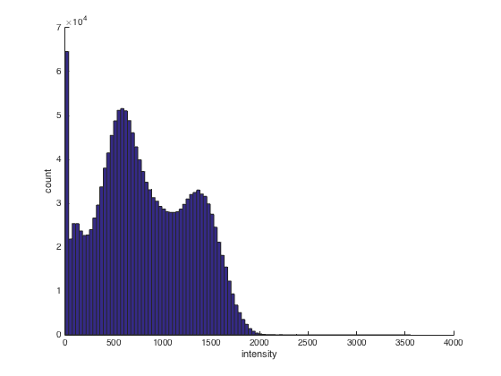
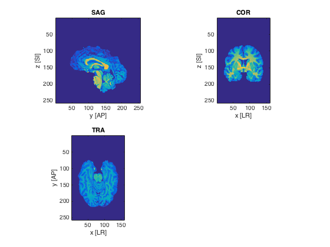
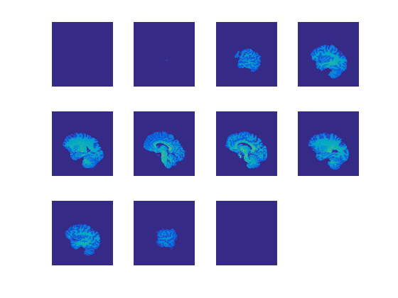
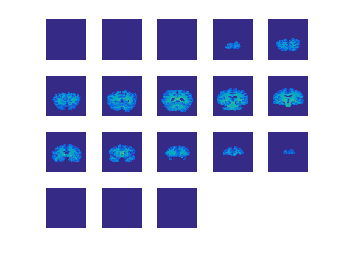

Contents
NIFTI basics
In this example, load a brain and visualize it in matlab
- For CoSMoMVPA's copyright information and license terms, #
- see the COPYING file distributed with CoSMoMVPA. #
% Set the path. config=cosmo_config(); data_path=fullfile(config.tutorial_data_path,'ak6','s01'); % Set filename fn=fullfile(data_path, 'brain.nii'); % Load with nifti ni=load_nii(fn);
Show the contents of the nifti header
cosmo_disp(ni.hdr); % print the dimensions size(ni.img) % plot a histogram of the intensities (use only values greater than zero) % change the number of bins % >@@> figure set(gcf, 'name', 'Intensity Histogram') hist(ni.img(ni.img(:) > 0), 100) xlabel('intensity') ylabel('count') box off % <@@<
.hk
.sizeof_hdr
[ 348 ]
.data_type
''
.db_name
''
.extents
[ 0 ]
.session_error
[ 0 ]
.regular
'r'
.dim_info
[ 0 ]
.dime
.dim
[ 3 160 256 ... 1 1 1 ]@1x8
.intent_p1
[ 0 ]
.intent_p2
[ 0 ]
.intent_p3
[ 0 ]
.intent_code
[ 0 ]
.datatype
[ 16 ]
.bitpix
[ 32 ]
.slice_start
[ 0 ]
.pixdim
[ 1 1 0.938 ... 0 0 0 ]@1x8
.vox_offset
[ 4.13e+03 ]
.scl_slope
[ 0 ]
.scl_inter
[ 0 ]
.slice_end
[ 0 ]
.slice_code
[ 0 ]
.xyzt_units
[ 2 ]
.cal_max
[ 0 ]
.cal_min
[ 0 ]
.slice_duration
[ 0 ]
.toffset
[ 0 ]
.glmax
[ 3.56e+03 ]
.glmin
[ 0 ]
.hist
.descrip
''
.aux_file
''
.qform_code
[ 0 ]
.sform_code
[ 0 ]
.quatern_b
[ 0.5 ]
.quatern_c
[ -0.5 ]
.quatern_d
[ -0.5 ]
.qoffset_x
[ -83.9 ]
.qoffset_y
[ 123 ]
.qoffset_z
[ -64.9 ]
.srow_x
[ 0 0 1 -83.9 ]
.srow_y
[ -0.938 0 0 123 ]
.srow_z
[ 0 0.938 0 -64.9 ]
.intent_name
''
.magic
'n+1'
.originator
[ 84.9 125 70.2 63 0 ]
.rot_orient
[ 3 1 2 ]
.flip_orient
[ 0 3 0 ]
ans =
160 256 256
 Plot slices
plot a sagital, coronal and axial slice at voxel positions (80,150,80) using squeeze and tranpose ("'") where necessary. (bonus points for axis labels and proper orientations, i.e. in the sagittal view the front of the brain is on the left and the back is on the right)
ii=80; jj=150; kk=80; figure % >@@> set(gcf, 'name', 'Canonical Views') subplot(2,2,1) %imagesc(fliplr(rot90(squeeze(ni.img(ii, :, :))))) imagesc(squeeze(ni.img(ii,end:-1:1,end:-1:1))') axis image title('SAG') xlabel('y [AP]') ylabel('z [SI]') subplot(2,2,2) %imagesc(fliplr(rot90(squeeze(ni.img(:, jj, :))))) imagesc(squeeze(ni.img(:,jj,end:-1:1))') axis image title('COR') xlabel('x [LR]') ylabel('z [SI]') subplot(2,2,3) %imagesc(fliplr(rot90(ni.img(:, :, kk)))) imagesc(squeeze(ni.img(:,end:-1:1,kk))') axis image title('TRA') xlabel('x [LR]') ylabel('y [AP]') % <@@<
Plot slice in all three dimensions
This uses the cosmo_plot_slices helper function
slice_step=15;
strView = {'SAG', 'COR', 'TRA'};
for dim=1:3
figure
% >@@>
cosmo_plot_slices(ni.img, dim, slice_step)
axh = findobj(gcf, 'Type', 'axes');
set(axh, 'visible', 'off')
set(gcf, 'name', sprintf('Slices %s', strView{dim}));
% <@@<
end
 